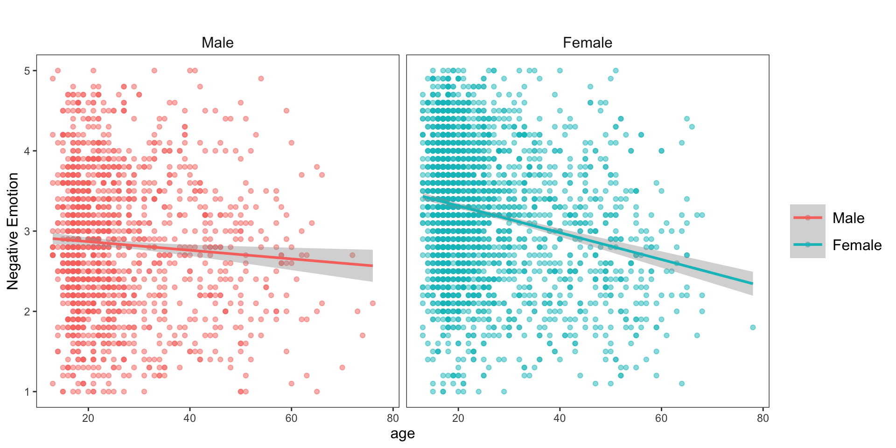
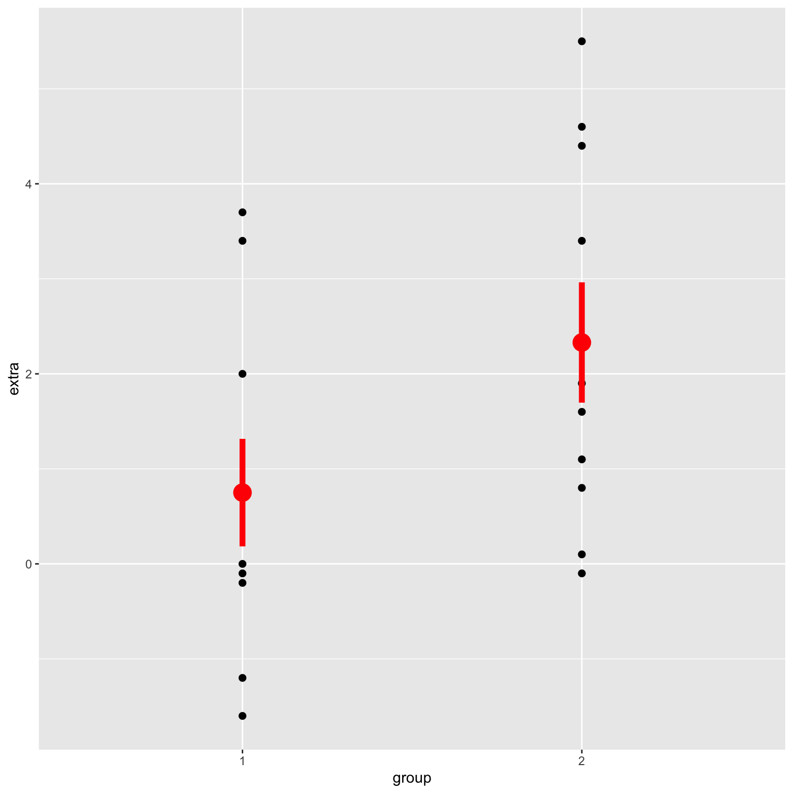
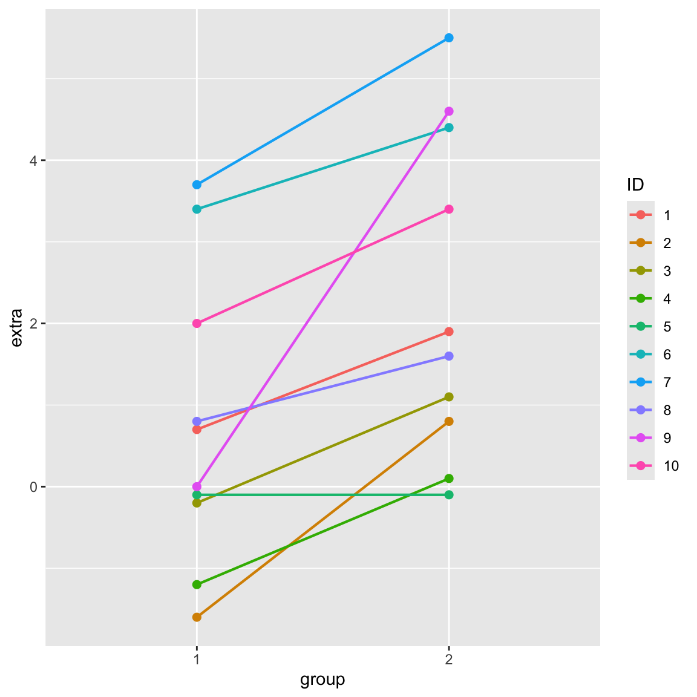

4. Statistical Conclusion Validity.
pre-register analyses. (and don’t cheat or “p-hack”.)
use the “right” methods. science is hard. lots of tools to try and do the right thing.
be transparent. share code and data; science is a process.

BYE!! THANKS!!!

Example : The Sleep Dataset
From the ?sleep dataset: “Data which show the effect of two soporific drugs (increase in hours of sleep compared to control).”
- Extra : increase in hours of sleep
- Group : drug given (1 = control; 2 = drug)
- ID : patient ID

Call:
lm(formula = extra ~ as.factor(group), data = sleep)
Residuals:
Min 1Q Median 3Q Max
-2.430 -1.305 -0.580 1.455 3.170
Coefficients:
Estimate Std. Error t value Pr(>|t|)
(Intercept) 0.7500 0.6004 1.249 0.2276
as.factor(group)2 1.5800 0.8491 1.861 0.0792 .
---
Signif. codes: 0 '***' 0.001 '**' 0.01 '*' 0.05 '.' 0.1 ' ' 1
Residual standard error: 1.899 on 18 degrees of freedom
Multiple R-squared: 0.1613, Adjusted R-squared: 0.1147
F-statistic: 3.463 on 1 and 18 DF, p-value: 0.07919
Fixed Effects : The “Average” across all the grouping variables.
Linear mixed model fit by REML. t-tests use Satterthwaite's method [
lmerModLmerTest]
Formula: extra ~ as.factor(group) + (1 | ID)
Data: sleep
REML criterion at convergence: 70
Scaled residuals:
Min 1Q Median 3Q Max
-1.63372 -0.34157 0.03346 0.31511 1.83859
Random effects:
Groups Name Variance Std.Dev.
ID (Intercept) 2.8483 1.6877
Residual 0.7564 0.8697
Number of obs: 20, groups: ID, 10
Fixed effects:
Estimate Std. Error df t value Pr(>|t|)
(Intercept) 0.7500 0.6004 11.0814 1.249 0.23735
as.factor(group)2 1.5800 0.3890 9.0000 4.062 0.00283 **
---
Signif. codes: 0 '***' 0.001 '**' 0.01 '*' 0.05 '.' 0.1 ' ' 1
Correlation of Fixed Effects:
(Intr)
as.fctr(g)2 -0.324
ICC = Intraclass Correlation Coefficient = how much the variation in our grouping variable (here : subject) explains total variation.
To calculate : take variance of intercept / total variance
[1] 0.7901628OR :
# Intraclass Correlation Coefficient Adjusted ICC: 0.790 Unadjusted ICC: 0.668